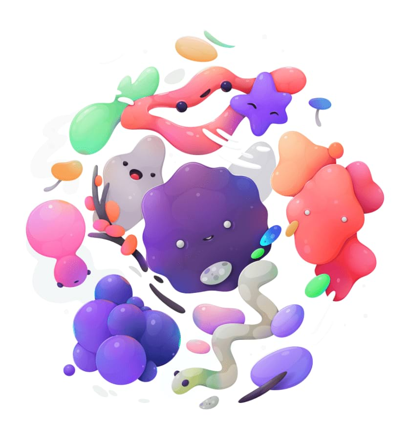

Fine-tune the colors in your image, or even completely change them, by modifying the hue, saturation and luminosity (lightness).

Settings
The following settings can be adjusted:
HSV—when checked, uses the Hue Saturation Value (HSV) model instead of Hue Saturation Lightness (HSL). The Saturation Shift and Luminosity Shift sliders behave differently between the two models.
Color Wheel—when using a particular Channel, allows you to determine the range of colors affected by that channel (e.g., Greens) using four nodes.
Channel—represented as color nodes under the wheel. Click the first node (Master; multi-colored) to alter all colors at once or click any other node to enable a specific color set (e.g., Reds).
Picker—allows you to sample a specific color from your image on which to base your adjustment. The currently active solid color node will be updated after picking; the Master node cannot be color picked.
Hue Shift—controls the color tint of pixels in the image. Drag the slider to shift the colors through the spectrum.
Saturation Shift—controls the intensity of the colors in the image. Drag the slider to the left to decrease color intensity, drag to the right to increase it.
Luminosity Shift—controls the overall brightness of the image. Drag the slider to the left to decrease brightness, drag to the right to increase it.